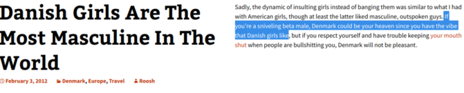
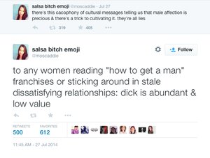

Feminism
Feminism is the process by which women take credit for the innovations by mostly celibate men which made them want to enter the workforce more. Feminism is the logical outcome of advanced industry/technology and the natural proclivity of females to maximize their mating strategy of hypergamy in liberal countries.
It is not only a reaction, but also a philosophy. The philosophy (falsely) claims that men currently have more societal power and reproductive choice than women, and therefore national movements must seek to give women more power and choice ("equality"). Feminism's defenders often imply (falsely) that infinite female sexual choice will, "trickle down", to sub-8 men in a country with high sexual dimorphism. Modern, millennial feminists regularly celebrate and promote male disposability in social life and dreephilia with regards to inceldom, at the same time that they claim they are the only valid representatives of male issues.
Feminists believe women (and often society) should never assume collective responsibility for the distribution of women's affection towards men (unless it has to do with a vogue racial issue), usually on the basis of some neoliberal argument. This non-altruism feminists exhibit with regards to men (which incels react to) is deeply sociopathic and combative.
History[edit | edit source]
Over a hundred years ago, due to the labor and innovation of men, advanced technology and industrialization began to rapidly change society. This had the effect of making jobs safer for women, and so women joined the workforce. Now that women were comfy enough to claim taxpayer status, men gave women the vote and positions of power in politics and the workplace. This occurred before the 'feminist' or 'suffragette' movement even began. The first wave feminist movement mainly occurred in the late 19th century, with Denmark being the first country having a feminist movement starting in 1871. Women started getting the right to vote in the 1700s (in municipal elections in some limited jurisdictions, and in the short lived independent Republic of Corsica), the same century the industrial revolution started, and way before any suffragette movement.
Only problem with this new paradigm is that women usually aren't sexually attracted to men who are lower in hierarchies of social status and money than they are. So as women gained dominance in traditional male hierarchies, they complained a bunch about there being 'no good men'[1][2] aka the dwindling amount of men wealthier or more powerful than them to give them tingles. As fewer men gave them tingles more incels were created and more men were sent their own way. And as women gained more dominance in society they complained more about beta males, and "rape" etc...
Modern feminist movements[edit | edit source]
They even created campaigns against these increasing amount of men lower on the social hierarchy than them they are not sexually attracted to, with the most extreme advocating androcide. Movements like:
Anti Catcalling Movement: aka 'Men poorer than me better not hit on me in public'
Anti Manspreading Movement: aka 'Public transport users (people poorer than me, or people who have not yet proved they are higher status than me) should not make me think of their junk'
Metoo movement: aka 'Autistic and socially isolated ugly men who can't read social cues should be locked up or ridiculed as much as rapists'[3][4]
Female Contempt for an Obvious Outcome of Feminism: Househusbands[edit | edit source]
A world where young women make more money than young men would seem to necessitate an increase in house-husbands. The male liberation movement, a subset of male feminist MRAs in the 60s wanted a dramatic increase in househusbands. However even in the most feminist countries, women will still expect the man to work or else they will breakup, even if she makes enough to provide for the family in an uber-welfare state. This is of course, insanely pointless.
Even in a country where feminism is institutional and mainstream, where equal-pay laws are in place, and where women have more total personal wealth than men, "the key factor in the decision to divorce is whether Hubby (note, not the wife) has a job. If he doesn’t, even if his job loss is involuntary, his odds of being ditched by his wife skyrocket"[5]
Early 20th century, anti-feminist and Marxist Belfort Bax's quote still remains true, "Among all the women’s rights advocates I am not aware of one who, in her zeal for equality between the sexes, has ever suggested abolishing the right of maintenance of the wife by the husband."[6]
And as the 21st century, right-wing provocateur named, "Eggman", put it, "Talk to any US woman and they'll tell you about men offering and buying them all sorts of things: vacations, houses, cars... When was the last time a woman offered to buy you a house or car, now that we have gender equality and all?"[7]
Most women say that, in theory, they would love to have a house-husband, this is an idea known in feminist theory as the 'structural power hypothesis'; the idea that gender roles are derived from early socialization and men's supposed cultural privilege and higher status in regards to women (i.e 'the patriachy') supposedly leads to men as a collective constructing rigid gender roles that are beneficial to their own sexual and economic interests. This is plainly contradicted by the relevant research [8] [9] [10] that clearly demonstrates that when women attain higher wealth and social status, these gender roles are not obviated, but instead reinforced.
A choice quote from the works previously referenced, The Adapted Mind: Evolutionary Psychology and the Generation of Culture:
Fifteen feminists leaders, when asked what traits they sought in a man, regularly used words which connote high status: "very rich" or "brilliant" or "genius". Large tips, lavish dinners, stunning suits, and so forth were regularly referred to. In short these (feminist) women wanted superpowerful men.
It seems that women therefore, naturally recoil at the idea of not using a man to financially provide for her, calling such men who are poor or who don't live up to masculine gender roles as, "manchildren", no matter how generous the welfare state she is in or how much money she makes.
"A 100% Completed Feminist World Be Better for Incels Than Partial Feminism" Theory[edit | edit source]
So far we see that feminism literally creates incels, but there may be a silver lining in a 100% feminist universe compared to a partial feminist universe, in that feminists feminize societies to the point where all men are so beta that the male intra-sexual competition may become smaller. Since no men ask women out in the 100% feminist universe once men are so beta. Becoming more feminist but not getting to 100% feminism may also be desirable for incels to avoid polygamy. Because of the impetus for women to achieve college degrees *and date*, assuming monogamy is enforced by non-feminist entities, feminism may continue to force more women to date down in educational status, letting more men not have to date complete morons.
The Less Difference Between the Sexes, the Less of a Problem Feminism Becomes[edit | edit source]

Otto Weininger argued that in humans, the less sexually dimorphic the genders, the less of a problem female sexual liberation becomes. Whereas, if there is high sexual dimorphism in humans, female sexual liberation leads to agitation, domestic abuse against husbands, and corruption of the arts and science by feminine women expressing vanity and seeking male attention.
The problem is that sexually liberated women naturally promote sexual dimorphism, which is widely known as the gender equality paradox. So obviously, freeing the sexual marketplace isn't the first step to a free sexual market without civilizational decline. In order to establish women a free sexual market peacefully, if such a thing were desirable, first attention should be paid to reducing sexual dimorphism or sex differences, even if that means reducing female sexual choice temporarily. If such a change were made permanent, and there was very little sexual dimorphism between the sexes, to the point of almost not being able to distinguish between the sexes, female sexual liberation would probably not lead to civilizational decline, or at least the kind that we see now.
"The Eradication of Feminism is Best for Incels" Theory[edit | edit source]
Because feminism has created more incels, many if not most self-identified incels don't subscribe to the previous theory and think modern matriarchies won't be sexually generous. Also, given prominent feminists have explicitly called for an, "end of men", anti-feminists have every right to be wary of feminist's attitude towards the health of men.
Anti-feminists should argue for a generous patriarchy with strictly socially enforced monogamy as not all patriarchies are alike. In most if not all modern patriarchal countries, polygyny arises and men hoard women, causing inceldom as well. And in patriarchal muslim countries, the hoarding of women in harems, inflates the bride-price so high that there exists a vast underclass of singe men who are susceptible to the promise of either real life brides or virgin brides in the afterlife through terrorist organization like al-Qaeda or ISIS.[11] It is for this reason that people joke about incels and muslim terrorists on incel boards. Some incels also believe that the only kind of pro-natalism that can be achieved to wipe out inceldom would be through a racial supremacist movement, which partly explains why people like Richard Spencer pander to incels.
Feminists Put Idealized Female Agency Above Happiness, Always[edit | edit source]
Penis shaming[edit | edit source]

Feminists in the United States take it as almost axiomatic that human penises are disgusting. Modern US millennial feminist posters relentlessly shame penises as being 'abundant and therefore low value and not important', implying that male sexuality should be evaluated on a free market demand/supply curve rather than society adjusting for inequality. Men are taught from a very early age to be ashamed of their genitalia by religion, but once they enter the adult world, this shaming is also partly institutionalized by feminism. The process of making men ashamed of their own sexual organs is part of the 'neutering' process critics of feminism reference. Penis shaming also probably contributes to perverted forms of male exhibitionism, which is often done in desperation of female recognition. The goal of penis shaming is to lower the value of men, and it's working.
Social Darwinist Feminism[edit | edit source]
Some feminist anti-incels hold social Darwinist, eugenicist views and believe in the good genes hypothesis that women always choose the best genes and hence women's sexual liberation is a great benefit for humanity as men with poor genes won't reproduce as much. If increasing female sexual freedom results in sharp increases of male inceldom, they see this as a necessary and welcome development. One such feminist activist even worked for the FBI.[12] In truth, there is little evidence that female mate choice is beneficial for humanity. Rather, a significant share of women seem to desire anti-social men,[13] and physical attractiveness and is only very weakly correlated with overall health status[14] and overall mating success is not associated with various health markers at all.[15]
On the contrary, there is some evidence that certain types of female social equality are potentially dysgenic, at least in terms of intelligence, as intelligence is negatively correlated with fertility among modern samples of Western women. This relationship is wholly mediated by women's greater educational attainment, that is women who delay reproduction to focus on higher education have substantially lower fertility than those (generally less intelligent women) who do not.[16] Though, life history speed seems to be slowing in general in modern societies, perhaps due to highly abnormal low stress environments (from a historical evolutionary perspective) resulting in a 'superstimulus' that leads to delayed reproduction, in any case.[17]
Feminists more often take issue with Darwin in general though.[18]
Anti-science[edit | edit source]
In general, feminists hate any studies which have to do with mating, including, but not limited to, studies from sociology, social psychology, and evolutionary biology. The main arch nemesis of feminism in the social sciences is evolutionary psychology, which many feminists regard as a pseudo-scientific veneer over its practitioner's misogyny, despite there existing a minor trend in feminism that attempts to integrate some of its findings as they pertain to women and the relations between the sexes.
There is also a trend in modern feminism that regards the very Aristotelean foundations of Western empirical thought as being a mere artefact of the patriachy; a male imposition of rigid logic in opposition to the supposedly superior 'female intuition'.
Feminist Violence[edit | edit source]
Feminists love to bring out the point that the many male dominanted groups that have formed recently are purley reactionary, radical, violent, and essentially terrorist. So here is a bulleted list of confirmed attacks on men and society from feminists that dwarf all of the incel/manosphere related attacks combined.
- Bombings and arson during 1912–1914 British suffragette campaign
- Western German feminist militant group: Rote Zora (1974–1995)
- Described in the Politico article as “America’s First Female Terrorist Group”, this group was entirely led by women and executed coordinated attacks including the 1983 bombing of the U.S. Capitol building
References[edit | edit source]
- ↑ https://www.vice.com/en_us/article/3bj5yv/youre-single-because-there-arent-enough-men-253
- ↑ http://www.dailymail.co.uk/news/article-6004239/High-flying-career-women-refusing-marry-despite-struggling-Mr-Right.html
- ↑ http://www.dailymail.co.uk/news/article-3830176/Man-Melbourne-tram-labelled-lowlife-creep-autistic-loves-giving-strangers-high-fives.html
- ↑ https://www.thesun.co.uk/news/10107166/student-googled-how-to-make-friend-touched-schoolgirl-faces-jail/
- ↑ https://nationalparentsorganization.org/blog/23125-does-cohabitation-explain-the-decline-in-the-divorce-rate
- ↑ https://www.marxists.org/archive/bax/1910/05/feminism-suffrage.htm
- ↑ https://www.youtube.com/watch?v=FxuBxQxY-kM
- ↑ https://books.google.com.au/books?id=dWBMCAAAQBAJ&pg=PT358&lpg=PT358&dq=structural+powerlessness+hypothesis+women%27s+sexual+tastes+become+more,+rather+than+less,+discriminatory+as+their+wealth,+power,+and+social+status+increase&source=bl&ots=mcWw0IHwnF&sig=fIxTG1hkcsVbw2WvhPcen6XLWDM&hl=en&sa=X&redir_esc=y#v=onepage&q=structural%20powerlessness%20hypothesis%20women's%20sexual%20tastes%20become%20more%2C%20rather%20than%20less%2C%20discriminatory%20as%20their%20wealth%2C%20power%2C%20and%20social%20status%20increase&f=false
- ↑ https://www.marketwatch.com/story/rich-women-like-rich-men-and-rich-men-like-slender-women-2015-09-28
- ↑ http://www.ifn.se/wfiles/wp/wp1146.pdf
- ↑ https://www.economist.com/christmas-specials/2017/12/19/the-link-between-polygamy-and-war
- ↑ https://twitter.com/DCELL68/status/992147364084310016 [Archive.is]
- ↑ https://incels.wiki/w/Scientific_Blackpill#Personality
- ↑ 10.0.4.13/0033-2909.131.5.63
- ↑ https://royalsocietypublishing.org/doi/10.1098/rsos.160603
- ↑ https://www.cambridge.org/core/journals/twin-research-and-human-genetics/article/how-intelligence-affects-fertility-30-years-on-retherford-and-sewell-revisited-with-polygenic-scores-and-numbers-of-grandchildren/AB8EF68EE05C8DFD0A1C424B4FF7BC1F
- ↑ https://charltonteaching.blogspot.com/2013/02/modern-sub-fertility-may-be.html
- ↑ https://www.smithsonianmag.com/science-nature/woman-who-tried-take-down-darwin-180967146/
See also[edit | edit source]
- Vintologi
- Androphobia
- Androheterophobia
- Women don't owe you anything
- Incel accelerationism
- Male feminists
- Apex fallacy
- The Pay Gap
- Misogysteria
- Patriarchy
- WGTOW
- "It's the patriarchy"
- Rape
- Cancel Culture
- TERF